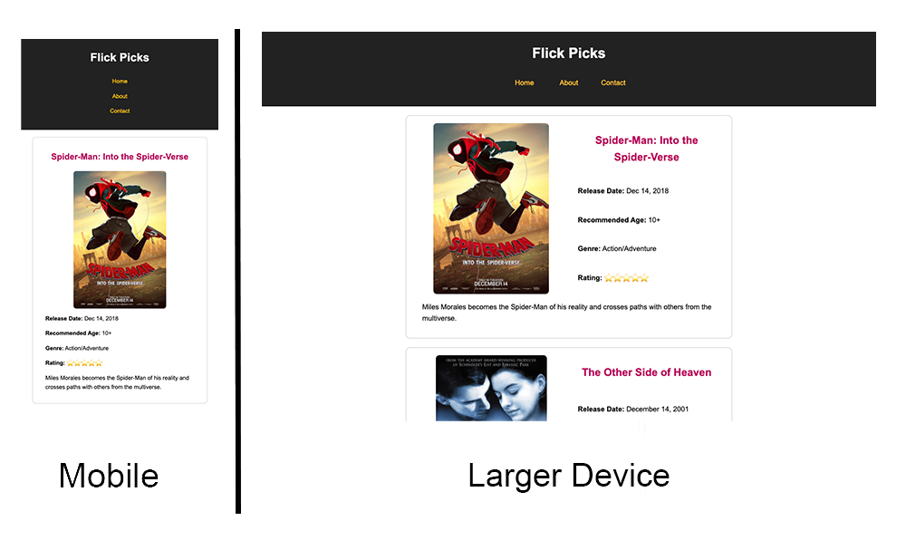
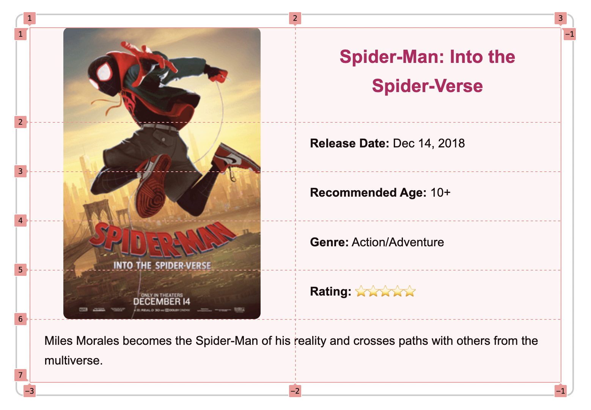

Ponder - Accessibility and Design
-
ARIA (Accessible Rich Internet Applications)
ARIA attributes and roles should only be used if the element or tag name is not already semantic enough to describe what is contained in that element.
Attribute Purpose roleDefines the element's type or function aria-labelProvides a custom label aria-labelledbyUses another element's text as a label aria-describedbyAdds extra descriptive info aria-hiddenHides content from assistive tech aria-liveAnnounces dynamic changes aria-expandedIndicates toggle state (expanded/collapsed) aria-controlsPoints to the element being controlled aria-checkedCheckbox or toggle state aria-selectedIndicates selection in a list aria-disabledMarks element as inactive or unavailable <span aria-label="4 out of 5 stars">⭐⭐⭐⭐</span></p>
This demonstrates our ponder web page with different layouts according to the device size:
Design and Accessibility
Using mobile first design, set up multiple grid columns in the media queries.
Visit this Design Basics Page to review good design principles.
Visit this Accessibility Basics Page to review good accessbility practices.
Practice Code
HTML:
<header>
<h1>Flick Picks</h1>
<nav>
<ul class="main-nav">
<li><a href="#">Home</a></li>
<li><a href="#">About</a></li>
<li><a href="#">Contact</a></li>
</ul>
</nav>
</header>
<main id="main-content" role="main">
<section id="movie-list" aria-label="Movie Reviews">
<article class="movie">
<h2>Spider-Man: Into the Spider-Verse</h2>
<img src="https://wddbyui.github.io/wdd131/images/spiderman.png" alt="Miles Morales swinging through the city">
<p><strong>Release Date:</strong> Dec 14, 2018</p>
<p><strong>Recommended Age:</strong> 10+</p>
<p><strong>Genre:</strong> Action/Adventure</p>
<p><strong>Rating:</strong> <span>⭐⭐⭐⭐⭐</span></p>
<p id='desc'>Miles Morales becomes the Spider-Man of his reality and crosses paths with others from the multiverse.</p>
</article>
<article class="movie">
<h2>The Other Side of Heaven</h2>
<img src="https://wddbyui.github.io/wdd131/images/heaven.png" alt="Miles Morales swinging through the city">
<p><strong>Release Date:</strong> December 14, 2001</p>
<p><strong>Recommended Age:</strong> 10+</p>
<p><strong>Genre:</strong> Drama/Religious</p>
<p><strong>Rating:</strong> <span>⭐⭐⭐⭐</span></p>
<p id='desc'>Based on the true story of Elder John H. Groberg, a missionary in Tonga in the 1950s, this film tells a powerful story of faith, hardship, and miracles.</p>
</article>
</section>
</main>
<footer>
<p>© Flick Picks</p>
</footer>
CSS:
body {
font-family: Arial, sans-serif;
margin: 0;
padding: 0;
line-height: 1.6;
}
header, footer {
background-color: #222;
color: white;
padding: 1rem;
text-align: center;
}
.main-nav {
list-style: none;
padding: 0;
}
.main-nav li {
padding: 8px;
}
.main-nav a {
color: #ffc107;
text-decoration: none;
}
#movie-list {
padding: 0 2rem;
}
.movie {
border: 2px solid #ccc;
padding: 1rem;
border-radius: 10px;
max-width: 700px;
margin: 20px auto;
}
.movie h2 {
color: #b30059;
font-size: 1.5rem;
text-align: center;
margin: 20px;
}
.movie p {
padding-left: 20px;
}
.movie img {
max-width: 100%;
display: block;
border-radius: 8px;
margin: 0 auto;
}
#desc {
grid-column: 1/3;
}
@media (min-width: 600px) {
}
